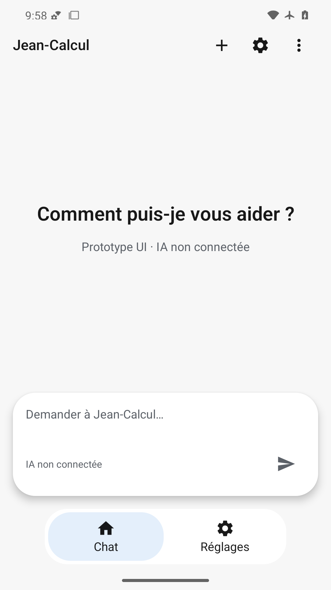
Invitation, en-tête, indication du champ et deux destinations complets.
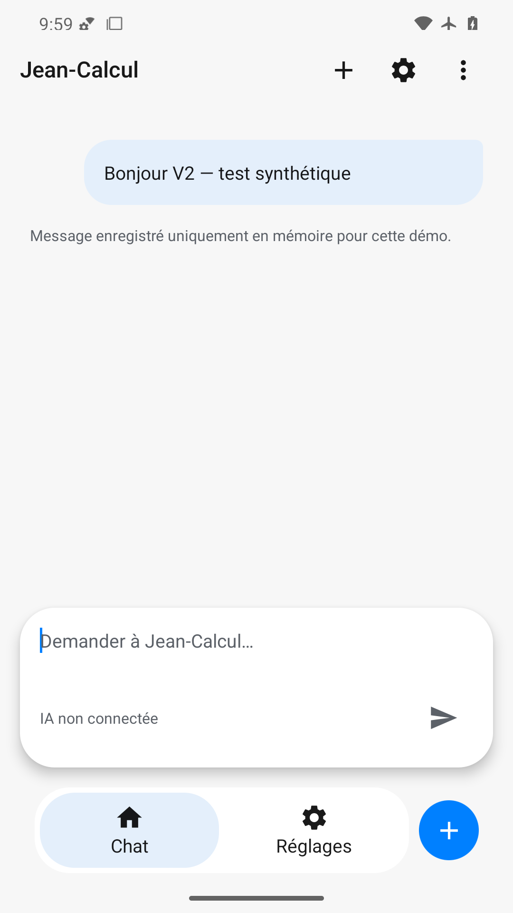
Message sortant lisible, indication de saisie restaurée et action plus bleue visible.
État vide restauré, champ et navigation complets.
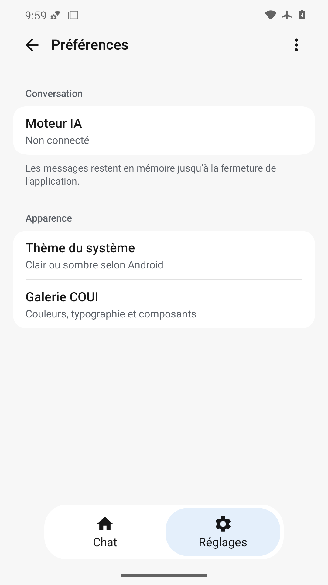
Groupes et résumés complets, retour et sélection Réglages visibles.
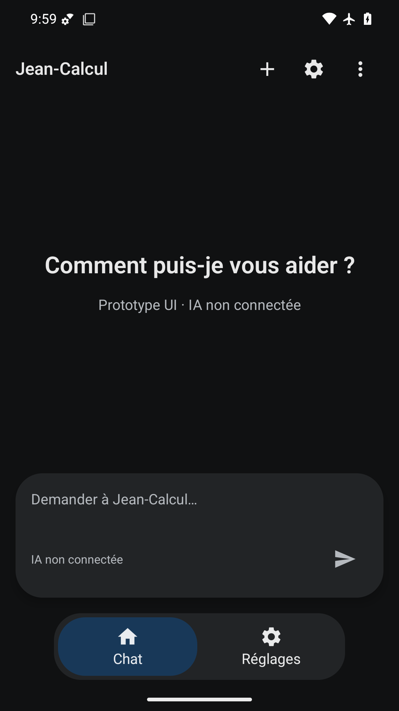
Texte clair sur surfaces sombres, indication du champ et navigation lisibles.
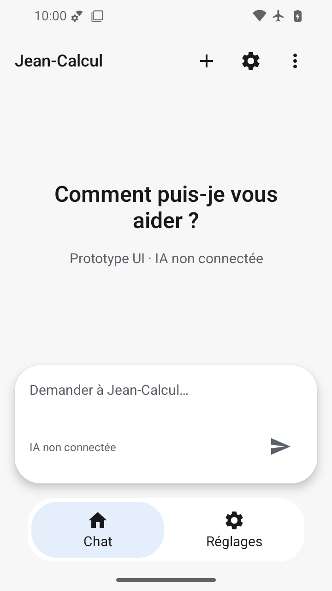
Invitation sur deux lignes, capsule et navigation sans chevauchement.
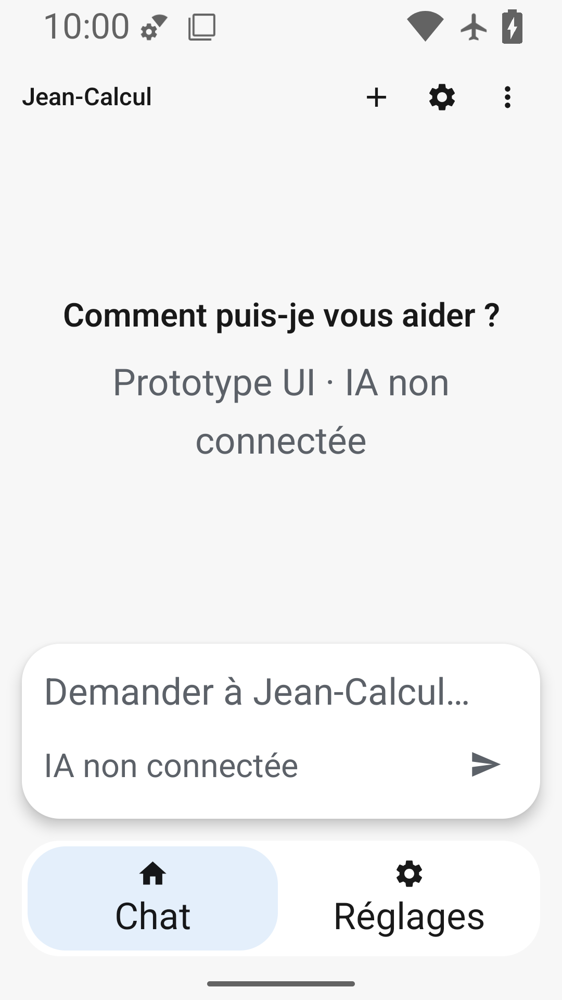
Texte agrandi lisible, destinations et champ non recouverts ; titres fixes alpha7.
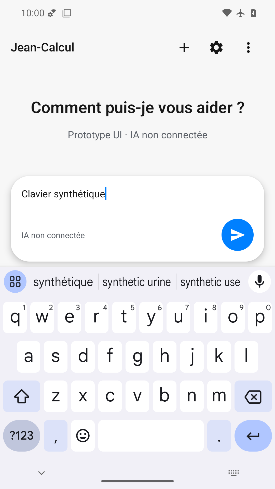
FAIL : texte saisi et envoi accessibles, mais en-tête Jean-Calcul et actions absents des pixels sous clavier malgré les sémantiques.
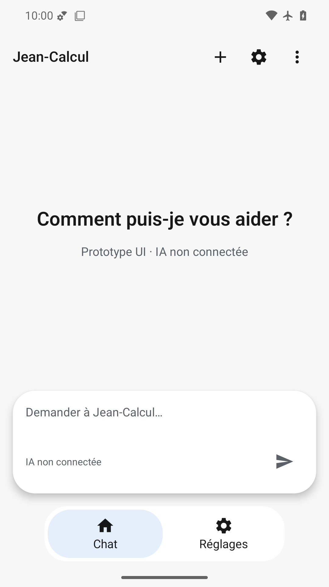
État final complet avec capsule, indication et destinations ; fluidité non jugeable sur image.
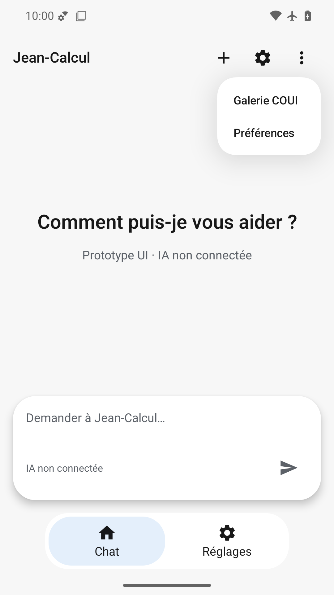
Deux entrées COUI lisibles dans le menu blanc, navigation et champ présents.
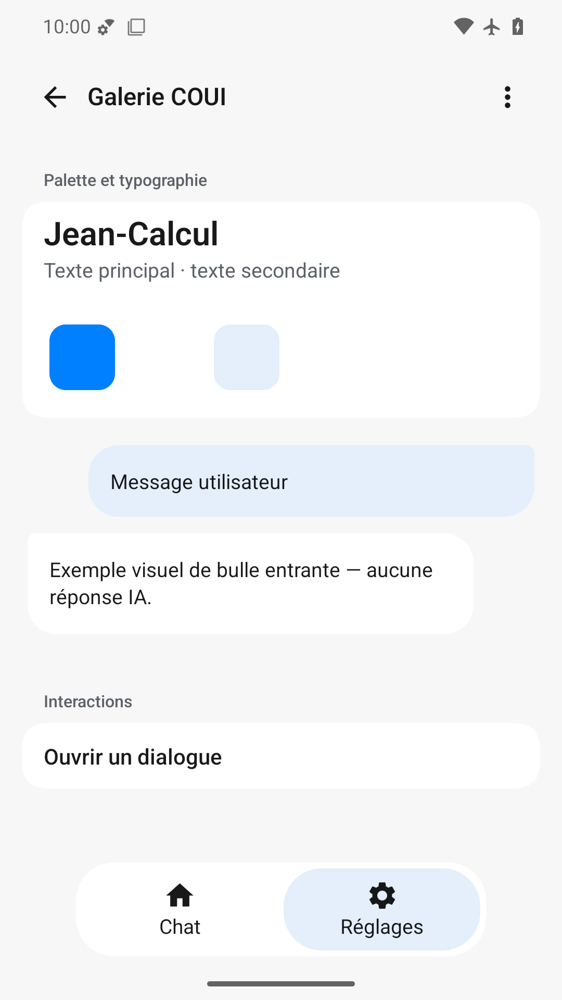
Deux bulles illustratives, palette et dialogue lisibles ; navigation complète. Nuancier blanc faiblement distinct.
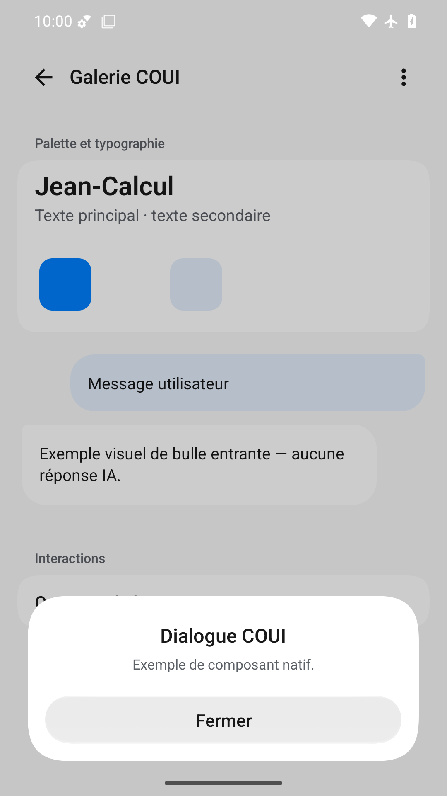
Titre, explication et action Fermer lisibles sur fond assombri, marges respectées.
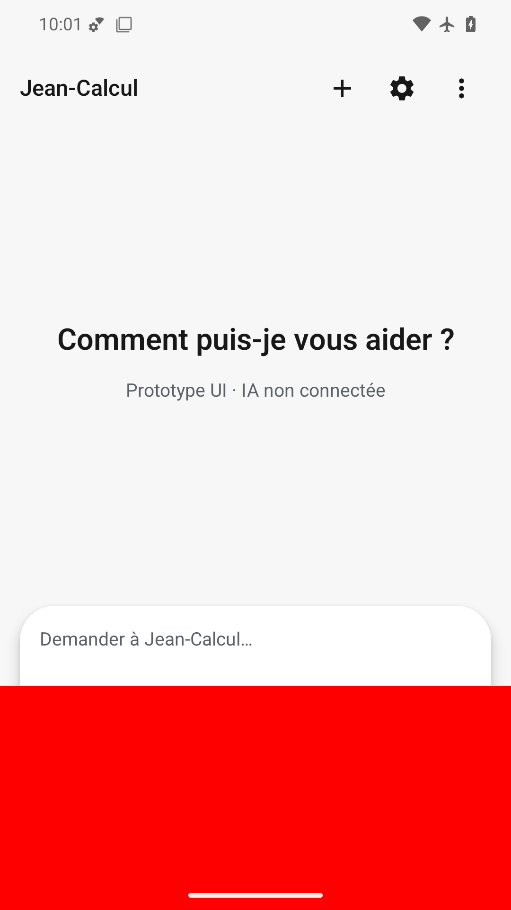
Rectangle rouge volontaire masquant envoi et navigation, défaut bloquant détecté.